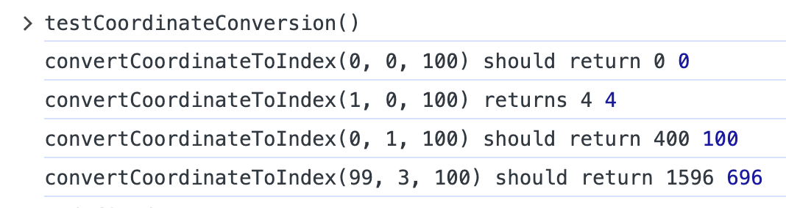

Your sketch:
sketch.js contains almost complete code for a simple game. The focus of this task is (light) unit testing but you might find it helpful to watch the video of the game play below
You don't need to familiarise yourself with the full code to complete this task but you are of course welcome to do so.
In sketch.js, scroll down to find the function called testCoordinateConversion(). You will
find it around line 100. This function contains a handful of tests for a function called convertCoordToIndex(). Run
the tests by opening your browser console and calling the function from the console (type testCoordinateConversion() and press Enter). You
should see output similar to the image below.

The black text describes the test (the values passed to the function and the expected return value) and the blue number shows the
value returned by the function. If the number returned by the function matches the expected return, the test has passed. If the number
returned by the function does not match the expected value, the test has failed. You should be able to see that two tests
have passed but two have failed. Your first task is to fix the error in the convertCoordToIndex() function. Read the function
documentation to find out what it does. You may need to refer back to the lecture on images, specifically the slides / examples that
explain the image pixel array.
Immediately after the draw() function, there are two incomplete functions: convertCornerToCenter() and convertCenterToCorner(). Complete
these functions and write at least two tests for each function inside testCoordinateConversion(). You can use the existing tests for
convertCoordToIndex() as a template. There are no rules for how you write the tests but you should be able to tell if
the function being tested returns the right output given particular input. Run the test function in the console.
There is no check file for this exercise because you are writing your own tests.
The complete gameplay:
convertCoordToIndex()There is one tiny step of the calculation missing. To find the missing piece, use your knowledge of how the four colour channels that make up a pixel are flattened into an array and the expected return values provided in the tests. Look carefully at the arguments used in the tests that pass versus the tests that fail. They will help you figure out which part of the calculation is wrong.
convertCornerToCenter() and convertCenterToCorner()These functions are intended to do a task that you have done many times before, going back to the very first practical. Read the JSDoc above each function, including the examples.